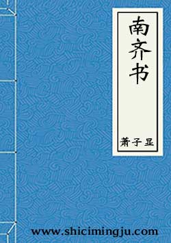

《南齐书》
《南齐书》，南朝梁萧子显撰，记述南朝萧齐王朝自齐高帝建元元年（479年）至齐和帝中兴二年（502年），共二十三年史事，是现存关于南齐最早的纪传体断代史。
本纪 共8卷
- 卷一·本纪第一·高帝上
- 卷二·本纪第二·高帝下
- 卷三·本纪第三·武帝
- 卷四·本纪第四·郁林王
- 卷五·本纪第五·海陵王
- 卷六·本纪第六·明帝
- 卷七·本纪第七·东昏侯
- 卷八·本纪第八·和帝
志 共11卷
- 卷九·志第一·礼上
- 卷十·志第二·礼下
- 卷十一·志第三·乐
- 卷十二·志第四·天文上
- 卷十三·志第五·天文下
- 卷十四·志第六·州郡上
- 卷十五·志第七·州郡下
- 卷十六·志第八·百官
- 卷十七·志第九·舆服
- 卷十八·志第十·祥瑞
- 卷十九·志第十一·五行
列传 共40卷
- 卷二十·列传第一·皇后
- 卷二十一·列传第二·文惠太子
- 卷二十二·列传第三·豫章文献王
- 卷二十三·列传第四·褚渊等
- 卷二十四·列传第五
- 卷二十五·列传第六
- 卷二十六·列传第七
- 卷二十七·列传第八
- 卷二十八·列传第九
- 卷二十九·列传第十·吕安国等
- 卷三十·列传第十一·薛渊等
- 卷三十一·列传第十二·江谧 荀伯玉
- 卷三十二·列传第十三·王琨等
- 卷三十三·列传第十四·王僧虔 张绪
- 卷三十四·列传第十五·虞玩之等
- 卷三十五·列传第十六·高帝十二王
- 卷三十六·列传第十七·谢超宗 刘祥
- 卷三十七·列传第十八·到撝等
- 卷三十八·列传第十九·萧景先等
- 卷三十九·列传第二十·刘瓛等
- 卷四十·列传第二十一·武十七王
- 卷四十一·列传第二十二·张融 周颙
- 卷四十二·列传第二十三·王晏等
- 卷四十三·列传第二十四·江斅等
- 卷四十四·列传第二十五·徐孝嗣 沈文季
- 卷四十五·列传第二十六·宗室
- 卷四十六·列传第二十七·王秀之等
- 卷四十七·列传第二十八·王融 谢朓
- 卷四十八·列传第二十九·袁彖 孔稚珪 刘绘
- 卷四十九·列传第三十·王奂等
- 卷五十·列传第三十一·文二王 明七王
- 卷五十一·列传第三十二·裴叔业 崔慧景 张欣泰
- 卷五十二·列传第三十三·文学
- 卷五十三·列传第三十四·良政傅琰等
- 卷五十四·列传第三十五·高逸
- 卷五十五·列传第三十六·孝义
- 卷五十六·列传第三十七·幸臣等
- 卷五十七·列传第三十八·魏虏
- 卷五十八·列传第三十九·蛮 东南夷
- 卷五十九·列传第四十·芮芮虏等
- 附：曾巩南齐书目录序